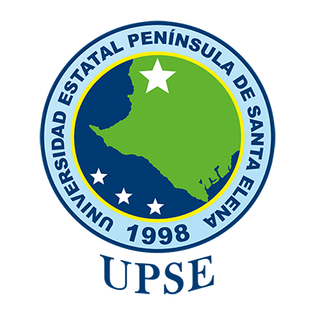
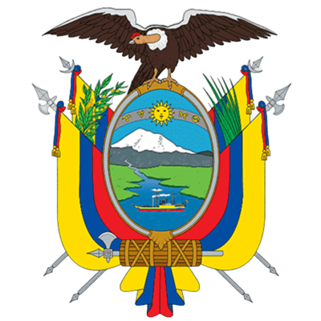

Estatuto de la Universidad Estatal Península de Santa Elena
Creación: Ley N° 110 R.O. (Suplemento) 1998-07-22

Art. 83. - Unidad Operativa de Aseguramiento de la Calidad. -Es una dependencia encargada de apoyar los diversos procesos que contribuyan al aseguramiento de la calidad, tanto institucional como de sus carreras y programas, con fines de alcanzar la acreditación y reconocimiento nacional e internacional.
Estará a cargo de un/a Director/a, quien será parte de la Comisión de Aseguramiento de la Calidad, que es un órgano asesor del Consejo Superior Universitario.